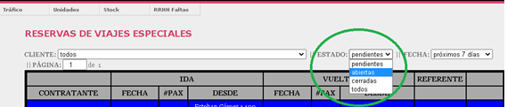
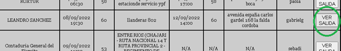
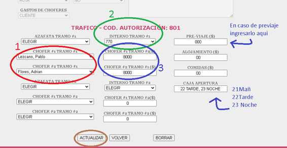
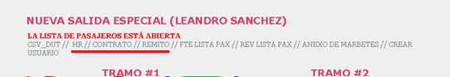
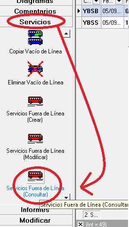

--------------
En esta sección se detallan los pasos a seguir al momento de preparar los papeles para los viajes especiales
Ingresamos a RutaTracking y nos dirijimos a la sección "Trafico" y luego a "Nueva salida especial"
(Ver Figura N° 1
En el apartado “Estado:” seleccionamos la opción “abiertas” (Ver Figura N°2)
Buscamos la salida que nos interesa y clickeamos “VER SALIDA” (Ver Figura N° 3)
En la pantalla que se nos abre nos dirigimos debajo de todo y completamos los siguientes datos:
Volvemos a la parte de arriba de la pagina y hacemos click en HR, CONTRATO y REMITO e imprimimos 1 copia de cada uno
Imprimimos la orden de servicio desde el sistema de Trafico. Teniendo seleccionado el servicio, en el menú
de la izquierda (Sobre el apartado servicios) hacemos click en “Servicios fuera de línea (consultar)” e imprimimos la hoja. (Ver Figura N° 6)
Adjuntamos las 4 hojas y eso es lo que deberán llevarse los choferes.
IMPORTANTE: El remito debe ser firmado por el contratante una vez hecho el servicio. Y el CONTRATO debe ser llevado firmado